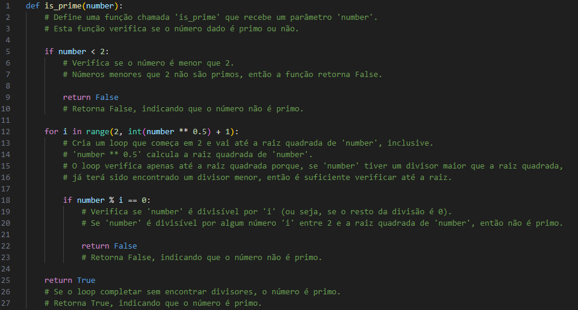

Bem vindo
Módulo I
Módulo II
Módulo III
Programas básicos...Fatorial, Primo, e etc...• Fatorial: O fatorial é uma operação matemática muito utilizada em diversas áreas, como matemática, estatística, ciência da computação e engenharia. Ele é representado pelo símbolo “!”, e é utilizado para calcular a multiplicação de todos os números inteiros positivos menores ou iguais a um determinado número. Em Python, existem várias maneiras de calcular o fatorial de um número. O cálculo do fatorial pode ser feito de forma iterativa, utilizando um loop, ou de forma recursiva, onde a função chama a si mesma até atingir um caso base. Exempo de fatorial iterativo:
Exemplo de fatorial recursivo: Biblioteca math: Além dos métodos mencionados anteriormente, existem outras formas de calcular o fatorial usando Python. Algumas bibliotecas, como o math, já possuem funções prontas para calcular o fatorial de um número. • Primo: Um número primo é um número natural maior que 1 que só pode ser dividido por 1 e por ele mesmo, sem deixar resto. Em outras palavras, um número primo tem exatamente dois divisores: 1 e ele próprio. Por exemplo, 2, 3, 5, 7 e 11 são números primos. Já o número 4 não é primo, porque além de ser divisível por 1 e 4, ele também é divisível por 2. Identificar se um número é primo ou não é uma tarefa comum na programação Python. Felizmente, existem várias maneiras de realizar essa verificação. Uma abordagem comum é o uso de um loop que verifica se o número é divisível por qualquer outro número menor que ele. Se nenhum divisor for encontrado, o número é considerado primo. Exemplo:  • Jogo da adivinhação: O jogo da adivinhação é um programa simples em Python que permita ao usuário adivinhar um número secreto. O programa deve fornecer dicas ao usuário para ajudá-lo a acertar o número. • Gerador de senhas: É um programa que gere senhas aleatórias com base em requisitos específicos, como comprimento mínimo e inclusão de letras maiúsculas, letras minúsculas, números e caracteres especiais. Vetores...Um vetor em Python é uma estrutura de dados que armazena uma coleção ordenada de elementos. Cada elemento é identificado por um índice, que começa em 0 para o primeiro elemento, 1 para o segundo e assim por diante. Os vetores são utilizados para armazenar e manipular conjuntos de valores relacionados. Para criar um vetor em Python, podemos usar a estrutura de dados nativa chamada de “list”. Por exemplo: vetor = [1, 2, 3, 4, 5] Neste exemplo, criamos um vetor chamado “vetor” com os valores de 1 a 5. Podemos acessar cada elemento do vetor utilizando seu índice. Por exemplo, para acessar o primeiro elemento, utilizamos “vetor[0]”. Além disso, também é possível criar vetores vazios e adicionar elementos posteriormente. Por exemplo: vetor = [] vetor.append(1) vetor.append(2) vetor.append(3) Neste caso, criamos um vetor vazio e adicionamos os elementos 1, 2 e 3 utilizando o método “append”. • Como manipular vetores utilizando a linguagem de programação Python Vamos explorar algumas das principais operações e funcionalidades para manipular vetores em Python. 1. Acesso aos elementos do vetor: • Podemos acessar um elemento específico do vetor utilizando seu índice. Por exemplo, para acessar o primeiro elemento do vetor “vetor”, utilizamos “vetor[0]”. • Também é possível acessar uma faixa de elementos utilizando a notação de fatiamento. Por exemplo, para acessar os elementos do segundo ao quarto, utilizamos “vetor[1:4]”. 2. Adição de elementos: • Podemos adicionar elementos a um vetor utilizando o método “append”. Por exemplo, para adicionar o valor 6 ao vetor “vetor”, utilizamos “vetor.append(6)”. • Também é possível adicionar múltiplos elementos de uma vez utilizando o método “extend”. Por exemplo, para adicionar os valores 7, 8 e 9 ao vetor “vetor”, utilizamos “vetor.extend([7, 8, 9])”. 3. Remoção de elementos: • Podemos remover um elemento específico do vetor utilizando o método “remove”. Por exemplo, para remover o valor 3 do vetor “vetor”, utilizamos “vetor.remove(3)”. • Também é possível remover um elemento pelo seu índice utilizando a palavra-chave “del”. Por exemplo, para remover o segundo elemento do vetor “vetor”, utilizamos “del vetor[1]”. 4. Operações matemáticas: • Podemos realizar operações matemáticas em todos os elementos de um vetor utilizando laços de repetição. Por exemplo, para multiplicar todos os elementos do vetor “vetor” por 2, podemos utilizar o seguinte código: for i in range(len(vetor)): vetor[i] = vetor[i] * 2 Matrizes...Python é uma linguagem de programação poderosa e versátil que oferece várias funcionalidades para trabalhar com matrizes. Para começar, vamos entender o que são matrizes. Em programação, uma matriz é uma estrutura de dados bidimensional composta por linhas e colunas. Em Python, podemos criar matrizes utilizando listas aninhadas, onde cada lista interna representa uma linha da matriz. Veja um exemplo: matriz = [[1, 2, 3], [4, 5, 6], [7, 8, 9]] Neste exemplo, temos uma matriz 3×3, com 3 linhas e 3 colunas. Cada elemento da matriz pode ser acessado utilizando índices, onde o primeiro valor representa a linha e o segundo valor representa a coluna. Por exemplo, para acessar o valor 5, utilizamos matriz[1][1]. Agora que entendemos como criar uma matriz básica em Python, vamos explorar algumas funcionalidades para manipulá-las. Uma das operações mais comuns é a transposição, onde trocamos as linhas pelas colunas. Em Python, podemos realizar a transposição de uma matriz utilizando a função zip. Veja o exemplo: matriz = [[1, 2, 3], [4, 5, 6], [7, 8, 9]] matriz_transposta = list(zip(*matriz)) Neste exemplo, a função zip é utilizada em conjunto com o operador * para desempacotar as linhas da matriz e transpor os elementos. Agora, a matriz transposta será: [(1, 4, 7), (2, 5, 8), (3, 6, 9)] Outra operação comum é a adição de matrizes. Para somar duas matrizes em Python, basta percorrer os elementos correspondentes e realizar a soma. Veja o exemplo: matriz1 = [[1, 2, 3], [4, 5, 6], [7, 8, 9]] matriz2 = [[9, 8, 7], [6, 5, 4], [3, 2, 1]] soma = [[matriz1[i][j] + matriz2[i][j] for j in range(len(matriz1[0]))] for i in range(len(matriz1))] Neste exemplo, a matriz resultante da soma será: [[10, 10, 10], [10, 10, 10], [10, 10, 10]] Arquivos...Criar, Ler, Excluir e EditarArquivos em Python são uma forma simples e amplamente utilizada de armazenar e manipular dados em formato de texto. Esses arquivos são ideais para salvar informações estruturadas ou não estruturadas, como logs, configurações e dados processados, em um formato legível por humanos. Há diversos modos de uso, como podemos ver abaixo:
Estes modos são passados como segundo parâmetro do método open. Ou seja, se quisermos abrir um arquivo em modo de escrita, utilizamos a seguinte sintaxe: arquivo = open("contatos.txt", "a") Passamos o nome do arquivo e sua extensão, além do modo que queremos utilizar o arquivo. Este modo pode ser alterado conforme as opções apresentadas anteriormente. Sendo assim, ao executar o código acima, o arquivo contatos.txt será aberto em modo escrita (caso ele não exista, um novo arquivo será criado): Escrevendo dados em arquivosAgora que já sabemos como criar arquivos e seus diferentes modos de uso, podemos realizar as primeiras manipulações. Neste tópico, veremos como escrever dados e salvar em arquivo utilizando o Python. Para isso, a linguagem fornece dois métodos. O primeiro é o método write() que recebe uma string como parâmetro e a insere no arquivo: arquivo = open("contatos.txt", "a") arquivo.write("Olá, mundo!") Com a execução do código acima, a string Olá, mundo! será inserida no arquivo texto.txt: Lendo dados de arquivosAlém de escrever dados em arquivos, precisamos, também, saber ler os dados que os arquivos possuem. Para isso, existem dois métodos, o primeiro é o readline() que irá ler uma quantidade N de caracteres da primeira linha passadas como parâmetro: arquivo = open("texto.txt", "r") print(arquivo.readline(3)) A execução acima retornará os três primeiros caracteres da primeira linha do arquivo: O segundo método disponível é o readlines(). Este método irá retornar todas as linhas do arquivo: arquivo = open("texto.txt", "r") print(arquivo.readlines()) Excluindo arquivosSe faz necessário também que saibamos excluir o arquivo que criamos, e em Python, você pode usar a função "remove()" do módulo "os". Como exemplificado abaixo: import os Importa o módulo os, que permite interagir com o sistema operacional. if os.path.exists(nome_do_arquivo): Verifica se o arquivo existe os.remove(nome_do_arquivo) Exclui o arquivo Editando dados de arquivosEditar arquivos em Python é uma tarefa comum em programação que permite modificar dados armazenados em arquivos de texto de maneira eficiente. Esse processo pode ser útil em diversas situações, como atualizar registros, corrigir erros, ou ajustar informações sem a necessidade de recriar o arquivo do zero. 1. Substituir Todo o Conteúdo Você pode abrir o arquivo no modo de escrita (w), que apaga todo o conteúdo do arquivo, e escrever o novo conteúdo.
2. Adicionar Conteúdo ao Final Para adicionar (anexar) conteúdo ao final do arquivo, use o modo de anexar (a). 3. Modificar Linhas Específicas Para modificar partes específicas do arquivo, você pode ler todo o conteúdo do arquivo, fazer as modificações desejadas e depois reescrever o conteúdo atualizado no arquivo.
4. Substituir Texto Específico Se você deseja substituir um texto específico em todo o arquivo, você pode usar a função replace(). 5. Inserir Conteúdo em uma Posição Específica Para inserir conteúdo em uma posição específica, você pode ler o arquivo, modificar o conteúdo conforme necessário e reescrever o arquivo. Exemplos e Explicações... |
|---|